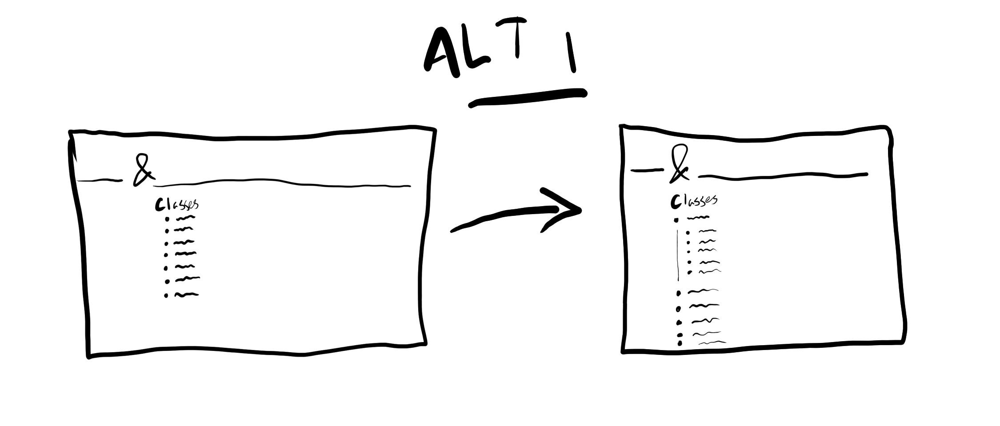

I like Dungeons and Dragons, but I don't always remember the basic principles behind all the classes.
To help with this, I created a webpage with the names of every class, as well as a short description.

The plan was to present the names of each class in boxes laid out in a grid, and for a description to appear when the user clicked on the name.
This description would disappear when the user clicked again.
I decided to use flexbox in CSS to lay out the grid rather than CSS grid itself, because this would allow me to effectively resize items and add new ones like I wanted to.
I started by finding short descriptions of each class on the official Dungeons & Dragons website and pasting them into a file.
I then used flexbox as I had intended to create two columns on the webpage and laid out the boxes with the names of each class in those columns.
I initially planned to add the descriptions using JavaScript, but encountered the problem of not knowing how to write any JavaScript at all.
I had planned to solve this problem by learning enough JavaScript to do what was needed, but this ended up taking too long to complete within the allocated timeframe.
Therefore, I changed my plan. Rather than clicking on the classes to reveal the description, I decided to show them after hovering over it instead.
This can be done using CSS without any JavaScript, and was therefore perfectly possible for me to accomplish.
With this challenge overcome, I took colour and design inspiration from the Dungeons & Dragons website and added in the descriptions until finally the website was functionong as intended.
If I were to improve this project, I would try to revisit the original plan to use JavaScript, and add more mechanical details of each class.
However, for the moment, the page will do fine as it is.
This task called for me to develop a hypothesis on an interdisciplinary topic and, using data analytics, highlight important information to aid future decision-making.
However, before development even got started, I ran into a major problem. This assignment turned out to be so vague that picking any one topic was difficult, as there was no way to tell what was or was not acceptable by the standards of the assignment.
In an effort to resolve this, I looked online for where the Department of Education had defined what this task was supposed to be.
When I eventually found it, I discovered that what I already knew about the assignment was all there was to know about it.
Upon realising that I was going to have to figure this out myself, I decided to let chance decide and visited the CSO website.
After looking through their lists of gathered statistics, I decided to analyse the percentage of renewable energy by time of day from 2020 to 2023.
I initially hypothesised that renewable energy would have a higher share of energy generation during the day than in the night for two reasons.
The first is that the sun only shines during the day, meaning that solar power is ineffective at night.
The second is because the current renewable energy generation capacity is limited, and energy is needed at night for lighting and heating.
Therefore, non-renewable energy would take on a greater share of power at night because the weakened renewables would leave more energy demands unmet.
I began working on the project by installing the Python module matplotlib onto my computer.
I chose matplotlib because I already knew how to use it, and I knew its data visualisation tools would be useful for the project at hand.
The data I downloaded from the CSO was split into average values for renewable percentage at half-hour intervals through the day for each month between January 2020 and December 2023.
While these distinctions are interesting, I only wanted to know about the average for each time of the day in general, so I wrote an algorithm to sort through the data from the CSO's file and added every data point from each time of day to their own list.
When learning about how to use a Microbit, I had an idea: surely the radio communication built into
every Microbit could be used to send messages in Morse code from one to another. Along with another
student, I began to go about building a Microbit program to make this happen.
We made a program in Python which would take inputs from a Micobit's buttons A and B, convert them into dashes and dots, and eventually send the encoded data over a certain frequency, which would be received by another Microbit with the same program and decoded.
After doing that, it would display the resulting text on its screen.
I initially intended to use Python's dictionaries to create a relatively simple system wherein each combination of dots and dashes that represented a letter was linked in a dictionary to the appropriate letter.
However, the version of Python installed on Microbits did not include or support dictionaries, rendering this impossible.
Instead, we created a list full of lists which contained a letter and its associated Morse code, through which we could decode the messages in a similar way to the original plan.
This project was barely completed before the focus of the class shifted toward web development, so I never really got to see the program in action.
However, something that could have been improved was the controls we created for writing and sending the messages. They were quite clunky and could be activated by accident, as we used the built-in Shake gesture to trigger the message being sent.